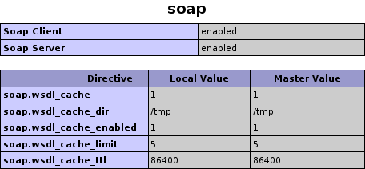
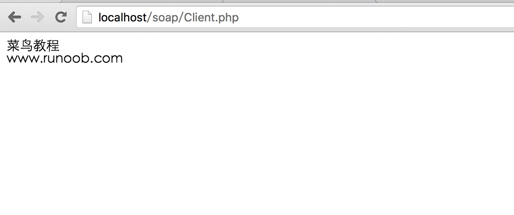

通过使用 Web Services，您的应用程序可以向全世界发布信息，或提供某项功能。
Web Services 脚本平台需支持 XML + HTTP。
现在开始学习Web Services!
Web Services 简介
对 Web Services 的简要介绍。
Why Web Services?
为什么及如何使用 Web Services？
Web Services 平台
Web Services 平台之后的组成元素。
Web Services 实例
一个 ASP.NET 的 Web Services 实例。
Web Services 总结
本节包括在本教程所学内容的一个总结，以及我们向你推荐的下一步应该学习的内容。
Web Services 可使您的应用程序成为 Web 应用程序。
Web Services 通过 Web 进行发布、查找和使用。
在继续学习之前，您需要对下面的知识有基本的了解：
如果您希望首先学习这些项目，请在我们的首页访问这些教程。
基础的 Web Services 平台是 XML + HTTP。
HTTP 协议是最常用的因特网协议。
XML 提供了一种可用于不同的平台和编程语言之间的语言。
我们会在本教程后面章节讲解这些主题。
几年前，Web services 的速度还没有快到让人们产生兴趣的程度。
由于所有主要的平台均可通过 Web 浏览器来访问 Web，不同的平台可以借此进行交互。为了让这些平台协同工作，Web 应用程序被开发了出来。
Web 应用程序是运行在 Web 上的简易应用程序。它们围绕 Web 浏览器标准被进行构建，几乎可被任何平台之上的任何浏览器来使用。
通过使用 Web services，您的应用程序可向全世界发布功能或消息。
Web services 使用 XML 来编解码数据，并使用 SOAP 借由开放的协议来传输数据。
通过 Web services，您的会计部门的 Win 2k 服务器可与 IT 供应商的 UNIX 服务器进行连接。
有一些功能是不同的应用程序常常会用到的。那么为什么要周而复始地开发它们呢？
Web services 可以把应用程序组件作为服务来提供，比如汇率转换、天气预报或者甚至是语言翻译等等。
比较理想的情况是，每种应用程序组件只有一个最优秀的版本，这样任何人都可以在其应用程序中使用它。
通过为不同的应用程序提供一种链接其数据的途径，Web services有助于解决协同工作的问题。
通过使用 Web services，您可以在不同的应用程序与平台之间来交换数据。
Web Services 拥有三种基本的元素: SOAP、WSDL 以及 UDDI。
基本的 Web services 平台是 XML + HTTP。
如需更多有关 SOAP 的知识，请访问我们的《SOAP 教程》
WSDL 是基于 XML 的用于描述 Web Services 以及如何访问 Web Services 的语言。
如需更多有关 WSDL 的知识，请访问我们的《WSDL 教程》
UDDI是统一描述、发现和集成（Universal Description, Discovery, and Integration）的缩写。
UDDI 是一种目录服务，通过它，企业可注册并搜索 Web services。
它是一个基于 XML 的跨平台的描述规范，可以使世界范围内的企业在互联网上发布自己所提供的服务。
任何应用程序都可拥有 Web Service 组件。
Web Service 的创建与编程语言的种类无关。
本章节我们将为大家介绍使用 PHP 的 SOAP 扩展来创建 Web Service。
SOAP有两种操作方式，NO-WSDL 与 WSDL。
在开始实例前，我们需要确定PHP是否安装了 SOAP 扩展。查看 phpinfo，出现以下信息表明已经安装了 SOAP 扩展：

在这个例子中，我们会使用 PHP SOAP 来创建一个简单的 Web Service。
服务端 Server.php 文件代码如下：
<?php
// SiteInfo 类用于处理请求
Class SiteInfo
{
/**
* 返回网站名称
* @return string
*
*/
public function getName(){
return "菜鸟教程";
}
public function getUrl(){
return "www.runoob.com";
}
}
// 创建 SoapServer 对象
$s = new SoapServer(null,array("location"=>"http://localhost/soap/Server.php","uri"=>"Server.php"));
// 导出 SiteInfo 类中的全部函数
$s->setClass("SiteInfo");
// 处理一个SOAP请求，调用必要的功能，并发送回一个响应。
$s->handle();
?>
客户端 Client.php 文件代码如下：
<?php
try{
// non-wsdl方式调用web service
// 创建 SoapClient 对象
$soap = new SoapClient(null,array('location'=>"http://localhost/soap/Server.php",'uri'=>'Server.php'));
// 调用函数
$result1 = $soap->getName();
$result2 = $soap->__soapCall("getUrl",array());
echo $result1."<br/>";
echo $result2;
} catch(SoapFault $e){
echo $e->getMessage();
}catch(Exception $e){
echo $e->getMessage();
}
这时我们访问 http://localhost/soap/Client.php，输出结果如下所示：

本教程已经向您讲解了如何把应用程序转换为网络应用程序.
您已经学习了如何使用 XML 在应用程序间发送消息。
您也学习了如何从应用程序导出某项功能（创建一个 web service）。
下一步您应当学习 WSDL 和 SOAP。
WSDL 是基于 XML 的用来描述 Web services 以及如何访问它们的一种语言。
WSDL 可描述 web service，连同用于 web service 的消息格式和协议的细节。
如果您希望学习更多有关 WSDL 的知识，请访问我们的《WSDL 教程》。
SOAP 是一种使应用程序有能力通过 HTTP 交换信息的基于 XML 的简易协议。
或者可以更简单地说：SOAP 是一种用于访问 web service 的协议。
如果您希望学习更多有关 SOAP 的知识，请访问我们的《SOAP 教程》。